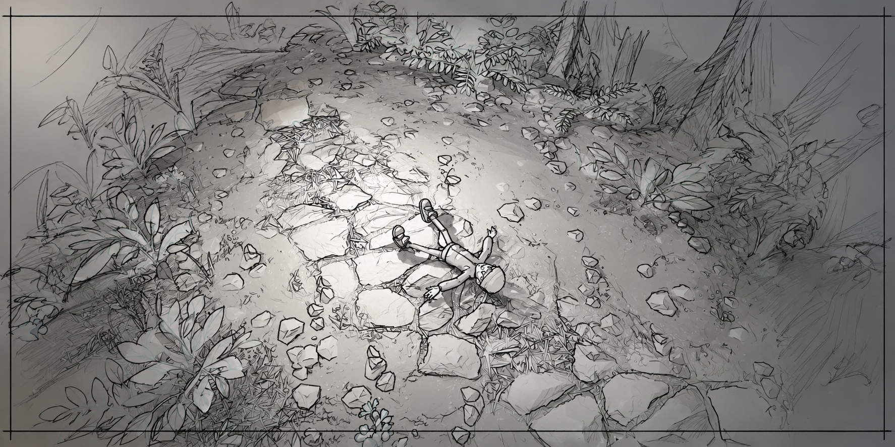
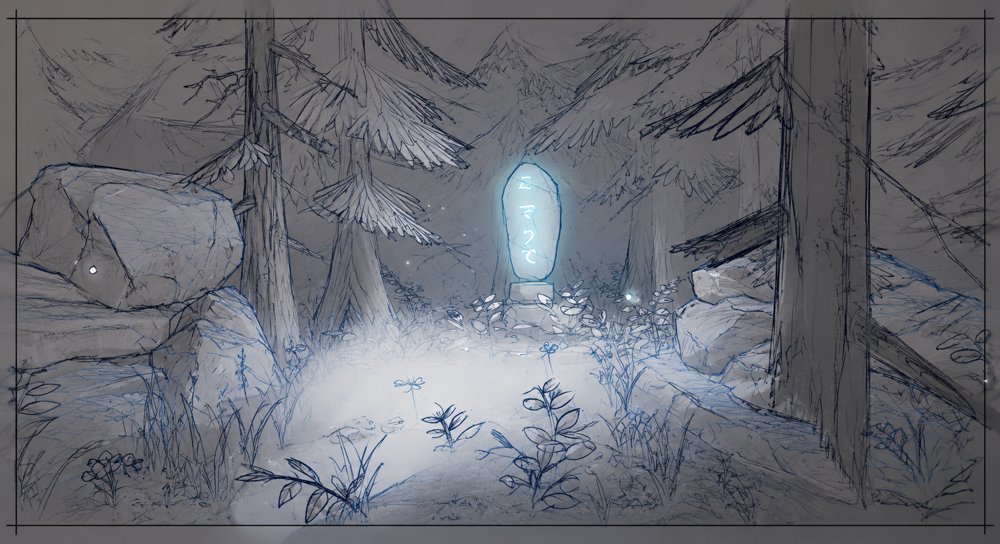
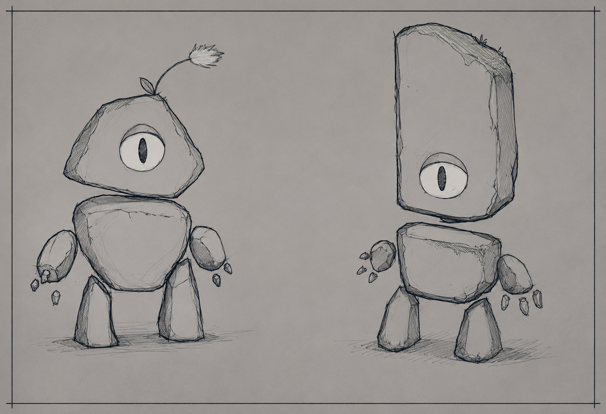

Little Lights
Isometric mystery escape game
Premise
You are Lucas, an average teenager who, along with his friends, is enjoying summer camp... until it all goes wrong.
A never-before-seen beast attacks the camp. Fleeing through screams and chaos, you fall into a ravine and lose consciousness. You wake up in the middle of the forest, confused and scared. The darkness seems alive, but you find an orb with glowing water that shields you from what lurks in the shadows.
Fortunately, a magical creature finds you — a "golem" whose sense of humor is questionable but whose intentions are good. There's only one way out of the forest: seal the creature that escaped its prison. Rebuild 3 destroyed totems, find their pieces, escape the darkness, overcome your fears, and... run from the creature!

Gameplay Loop
6–10 minute levels. Currently 3 levels plus an introductory tutorial. All levels advance the main story.

Features
Maze-like levels
Test your memory and spatial awareness to navigate through the forest.
Magic orb
Dispels the fog of war from the darkness and reveals the hidden path.
Abilities
Climb obstacles, crawl under, and balance across with quick-time events.
Attack parry
Deflect the creature's swipes with precise button timing.
Light ponds
Recharge your magic orb to keep the protection alive.
Dual rhythm
Combines frantic moments with calm exploration. Challenges mind and reflexes.
The Forest
The game takes place in a magical forest divided into 4 main zones plus an introduction that sets the atmosphere and teaches the basic mechanics.
Golem Base
Quiet Trees
Hidden Cave
The Mountains
Learn the path
Use your memory to know where you are and where to go to find the totem pieces.
Follow the traces
When you find a broken totem, small light orbs guide you where to go.
Progression & Upgrades
Think fast
When the beast appears you must know where to go... or meet your fate.
Light is your tool
Don't let the orb go out: it protects you from the darkness, reveals the path, and wards off the monster.
The Characters
Run
Dodge the monster's attacks and lose it by crossing obstacles.
Survive
Your orb is your only defense. Manage your light well and stay out of the shadows.
